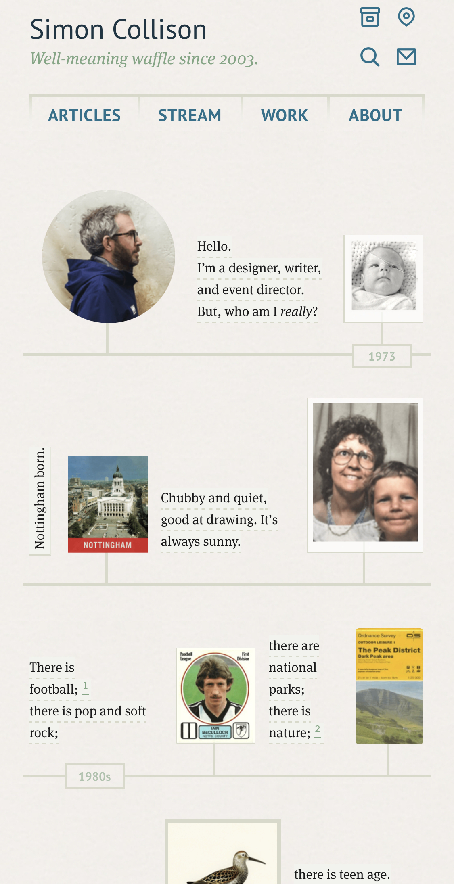

Contrast
Studio Bagaz
studiobgz.comA very nice looking and eye-friendly website, where all titles and any kind of text can become easily readable because of the nice color choice for the backgrounds, and how these sugar, saturated colors contrast with simple white color texts.
White Space and Clean Design
Satori Graphics' portfolio
satorigraphics.netSatori Graphics' portfolio is an evident example of having negative space in a website and therefore appearing nice and clear. As you're scrolling down his portfolio you can perfectly identify each section, making it easy for clients to see his name and location, contact, and logo portfolio.
PARC: Repetition
Simon Collison's website
colly.com
Simon Collison uses repetition to create rhythm and movement through his presentation as a web designer. By repeating this image sequence layout, he illustrates his life and how he became who he is now.